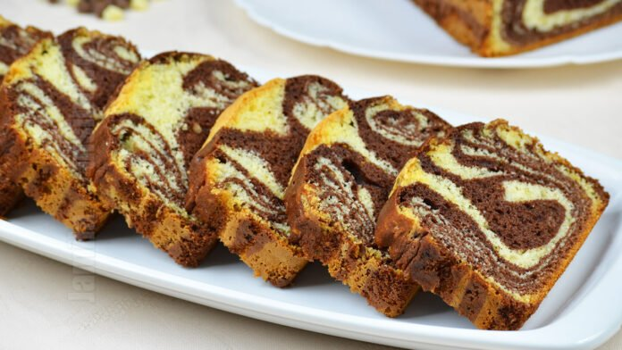

Reteta chec pufos

Descriere
Ingrediente
- 200 g faina
- 200 g zahar
- 5 oua separate
- 16 g zahar vanilat
- 4 linguri ulei
- 2 linguri cacao
- 1 lingurita praf de copt
- putina sare
Pasi
- Separam albusurile de galbenusuri si batem albusurile cu un praf de sare, cu ajutorul mixerului. Cand albusurile au devenit spumoase adaugam zaharul vanilat bourbon si zaharul tos pana cand obtinem o spuma tare si lucioasa.
- Galbenusurile se amesteca cu uleiul ca la maioneza, se toarna cate putin, si se pun peste albusurile batute spuma amestecand de jos in sus cu o spatula.
- Se amesteca faina cu praful de copt si se pune peste amestecul de albusuri si galbenusuri lingura cu lingura amestecan tot cu spatula cu miscari largi de jos in sus ptr a nu scoate aerul din albusuri. Impartim compozitia formata in doua si intr-una din ele punem cacaoa pe care am amestecat-o bine cu 2-3 linguri de apa calda.
- Intr-o tava mare de cozonac tapetata cu hartie de copt (eu am folosit forme cumparate din hartie) incepem sa formam checul. Punem in tava cu o lingura din compozitia alba si peste din compozitia cu cacao, se procedeaza la fel pana terminam ambele comozitii.Vom obtine un chec pufos marmorat.Dam checul la cuptor la aragazul incins inainte la 180°c ptr 30-40 minute pana ce checul e bine copt, cand e pe jumatate copt am pus peste el cateva alune de padure.
- La sfarsit se face testul cu scobitoarea.
Back to homepage